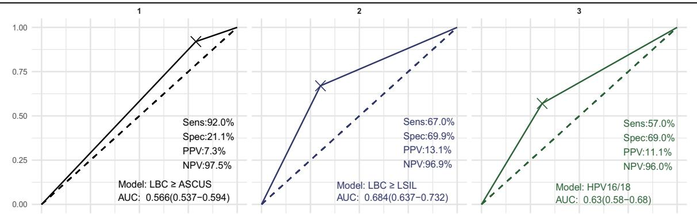

1Transformation Zones & Screening
TZ-1/2
visible SCJ
TZ-3
SCJ not visible
90-70-90
WHO targets
- TZ types: TZ-1/2 — squamocolumnar junction fully/partially visible; TZ-3 — junction not visible (atrophy, post-treatment).
- Challenge: TZ-3 colposcopy is difficult, raising missed CIN3+ and unnecessary referrals in routine screening.
- Question: does cytological PAX1/JAM3 methylation (CISCER) perform consistently across TZ types?
2Study Design
1782
screened
1398
analyzed
1190
TZ classified
- Setting: Nov 2020–Oct 2022, PUMCH colposcopy referrals; all underwent LBC + hrHPV genotyping + CISCER.
- Endpoint: CIN3+ detection; performance compared across all women and TZ-1/TZ-2/TZ-3 subgroups.
- Comparators: LBC ≥ASC-US · hrHPV+ · HPV16/18+ · hrHPV+CISCER combined strategy.
- Outcomes: Se/Sp/AUC, CIN3+ risk given positive test, colposcopy referrals per CIN3+ detected.
34.6%
CIN3+ risk overall
31.4%
CIN3+ risk TZ-3
CISCER+
highest risk marker
- Specimen: same cytology sample used for LBC and methylation — no extra collection step.
- Classification: TZ type recorded at colposcopy; ECC used where indicated for TZ-3.
- Reference: histopathology (biopsy/ECC/conization) as the CIN3+ standard.
1782
referred
384
excluded
208
no TZ record
- Timeline: 2-year enrollment (Nov 2020 – Oct 2022) at a national referral center.
- Subgroup: 1190 women with documented TZ classification formed the TZ analysis set.
设计要点：全部受试者接受 LBC、hrHPV 分型与 CISCER 三种检测，以组织病理 CIN3+ 为终点，按 TZ 亚组比较诊断性能与转诊效率。
3CISCER Performance by TZ (CIN3+)
| Group | Se % | Sp % | AUC | CIN3+ risk | Ref/CIN3+ |
|---|---|---|---|---|---|
| All women | 67.4 | 91.0 | 0.792 | 34.6% | 2.9 |
| TZ-1 | 72.0 | 94.2 | 0.831 | — | — |
| TZ-2 | 48.3 | 91.3 | 0.698 | — | — |
| TZ-3 | 81.5 | 89.8 | 0.856 | 31.4% | 3.2 |
CISCER achieved the highest diagnostic accuracy vs LBC≥ASC-US, hrHPV+ and HPV16/18+ in every TZ group; strongest gain in TZ-3 (AUC 0.856, Se 81.5%).
4ROC & Referral Efficiency

- TZ-3 best: highest AUC among all strategies — improved CIN3+ discrimination where colposcopy is hardest.
- Fewest referrals: 2.9 (overall) and 3.2 (TZ-3) colposcopies per CIN3+ detected vs conventional tests.
- Combination: hrHPV + CISCER further improved risk stratification.
5Risk Stratification & Utility
- Highest positive risk: CISCER+ carried the highest CIN3+ probability (34.6% overall, 31.4% TZ-3) — better than LBC/hrHPV positivity.
- Referral reduction: substantially fewer unnecessary colposcopies than cytology and HPV genotyping.
- Across TZ spectrum: consistent high specificity (≥89.8%) in all subgroups — low false-positive referral burden.
- Practical role: cytological methylation assay fits routine screening workflows, including TZ-3 women.
≥89.8
Sp % all TZ
0.856
TZ-3 AUC
2.9
ref per CIN3+
CISCER: PAX1/JAM3 methylation in cervical cytology specimens; same-sample workflow as LBC.